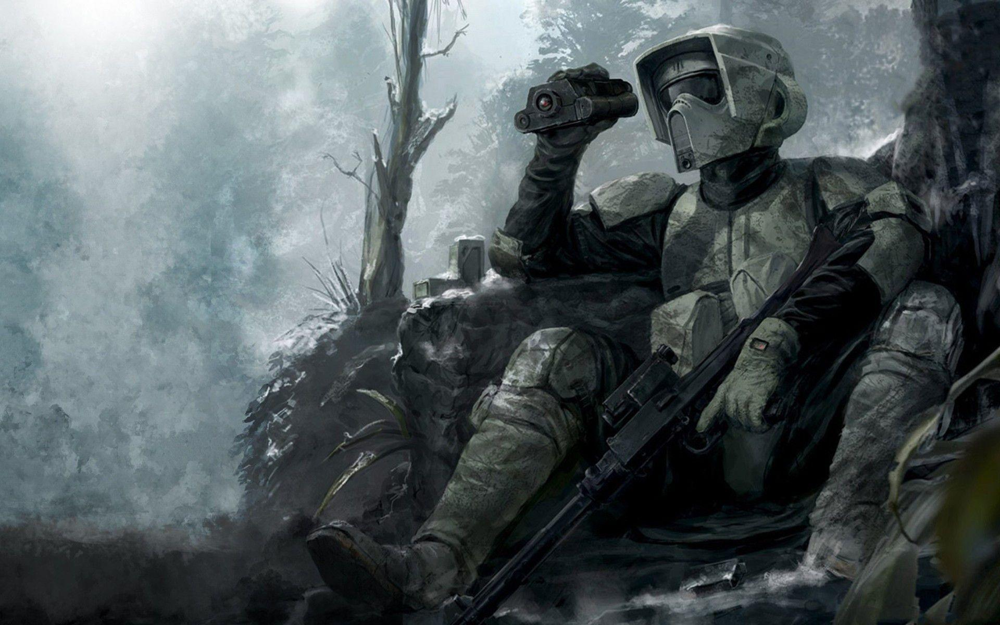

Le 41e Corps d'élite était un corps de la Grande Armée de la République durant la Guerre des Clones. Cette unité était commandée par la Générale Jedi Luminara Unduli ainsi que par le Commandant clone Gree.
Cette unité participa notamment à la Bataille de Kashyyyk en 19 av.BY pour protéger Kashyyyk et les Wookiees des droïdes de combat séparatistes. Gree reçut alors l'Ordre 66 et voulut tuer Yoda, mais ce dernier se défendit, le décapita, et fuit grâce à l'aide de Chewbacca et Tarfful. Le 41e Corps d'élite eut donc l'ordre de tuer les Wookiees considérés comme des traîtres.

Peu après le début de la Guerre des Clones, elle fut chargée d'accompagner le Vice-Roi Nute Gunray de la Fédération du commerce, l'un des leaders du Conseil Séparatiste, qui avait été capturé sur Rodia. Malheureusement, Asajj Ventress parvint à le libérer de la garde de la Jedi. Durant la deuxième année du conflit, Unduli fit partie des commandants participant à la seconde bataille de Geonosis.
Durant la dernière année du conflit, Luminara Unduli accompagne Yoda sur Kashyyyk afin d'aider les Wookiees à repousser les attaques Séparatistes. Cependant, durant les combats, le Chancelier Suprême Sheev Palpatine déclencha l'Ordre 66, ordonnant à tous les soldats clones d'abattre leurs supérieurs Jedi.Luminara Unduli fut capturée et enfermée dans la Flèche de Spire, la prison de Stygeon Prime.
L'Empire Galactique étendant son emprise sur la galaxie, tenta toujours de démasquer les derniers Jedi afin de les exterminer. Le sarcophage contenant la dépouille de Luminara était sous la garde de l'Inquisiteur, qui s'en servit en 5 av.BY pour piéger le jeune apprenti Ezra Bridger et son maître Kanan Jarrus dans la prison mais l'Inquisiteur échoua.
Le matricule CC-1004, surnommé Gree, était le commandant clone du 41e Corps d'élite de la Grande Armée de la République durant la Guerre des Clones.
Il participa à de nombreuses missions et batailles au coté de la Maître Jedi Luminara Unduli. Quand Padmé Amidala fit captif le Vice-Roi Nute Gunray, c'est lui et ses hommes qui vinrent sur la planète Rodia pour l'emmener. Le leader Séparatiste fut enfermé dans la geôle d'un Destroyer Stellaire de classe Venator de la République Galactique, sous la sécurité de Gree, aux côtés des gardes du Sénat et de la Maître Luminara Unduli accompagnée de la padawan Ahsoka Tano. Asajj Ventress vint libérer le Vice-Roi, Gree montra qu'il était loyal, vaillant mais également insensible à la corruption, notamment quand Gunray tenta de le soudoyer et que le capitaine Faro Argyus trahi la République.
Il mourut en 19 av.BY durant la bataille de Kashyyyk en exécutant l'Ordre 66 et en voulant abattre Yoda, qui le tua le premier.
"Bouclez votre ceinture et vérifiez vos cellules, soldats. Nous arrivons."
―Buzz
Buzz était le surnom d'un soldat clone qui servait la Grande Armée de la République au sein du 41e Corps d'élite pendant la Guerre des Clones. Il était armé d'un canon blaster Z-6. Il participa à la seconde bataille de Geonosis, durant laquelle il participa à une mission de reconnaissance avec la Maître Jedi Luminara Unduli pour retrouver et capturer Poggle le Bref afin de le juger. Lors de leur mission, ils purent le localiser jusqu'au Temple Progate. À leur insu, le temple était remplit de vers infectant le cerveau. Pendant qu'il fouillait le temple, Buzz fut tué par un mort vivant Geonosien infecté par l'un de ces vers tandis que Luminara Unduli fut capturée par ces derniers.
Draa était le surnom d'un soldat clone qui servait la Grande Armée de la République au sein du 41e Corps d'élite pendant la Guerre des Clones. Durant la seconde bataille de Geonosis, il était sous le commandement du Général Jedi Luminara Unduli ainsi que de son apprentie Barriss Offee et du commandant clone Gree.
Draa participa à la destruction d'une usine de droïde, qui était la plus grande de la galaxie. Lui, le commandant clone Gree, le capitaine clone Rex, les Généraux Jedi Luminara Unduli et Anakin Skywalker et d'autres clones détournaient l'attention des droïdes pendant que les Padawan Ahsoka Tano et Barriss Offee passaient par les souterrains. Mais, une unité de droïdekas arriva en renfort, c'est ainsi que Rex ordonna à Draa de les détruire à l'aide de son lance-roquettes RPS-6. Ensuite, les deux padawans purent détruire le générateur de bouclier.
Gray, officiellement connu sous le nom de CC-10/994, était un capitaine clone qui a servi comme commandant en second du général Jedi Depa Billaba pendant les dernières étapes de la guerre des clones. Il a combattu aux côtés de Billaba et de son padawan Caleb Dume lors de la conquête de Kaller, où il a exprimé des doutes quant à la capacité de la République à vaincre l'armée droïde séparatiste occupant la planète. Cependant, la bataille tourna bientôt en leur faveur avec l'arrivée de Clone Force 99. Les clones expérimentaux fauchèrent les droïdes et détruisirent leur colonne d'artillerie.
La victoire a été écourtée lorsque Gray a reçu une transmission du Chancelier Suprême Palpatine, qui a émis l'Ordre 66. Cette directive visait tous les Jedi à être exécutés pour trahison contre la République. Le capitaine Grey, contraint par sa puce de contrôle d'obéir, a ouvert le feu sur Billaba. La Jedi a tranché son blaster avec son sabre laser mais a rapidement été submergée par les hommes de Gray. Billaba a donné sa vie en retenant les clones pour que son padawan Caleb puisse s'échapper.
Yoda était un individu d'une espèce inconnue qui comptait parmi les Maîtres Jedi les plus puissants et reconnus de toute l'histoire de la Galaxie, célèbre pour sa sagesse légendaire, sa maîtrise de la Force et ses talents au sabre laser. Il était membre du Haut Conseil Jedi pendant les dernières décennies de la République Galactique et en était le Grand Maître avant et pendant la Guerre des Clones. À la suite de la bataille de Geonosis, Yoda prit le titre de Maître de l'Ordre en plus de celui de Grand Maître.
Durant ses siècles de service à la Force, le Grand Maître Yoda fut impliqué dans la formation de presque tous les Jedi de l'Ordre, dont des membres de premier plan comme Obi-Wan Kenobi, Ki-Adi-Mundi et Mace Windu, qui devinrent tous membres du Conseil à ses côtés par la suite. Si Yoda était probablement le membre de l'Ordre le plus sensible à la Force, il n'était pas infaillible. Ce fut en partie à cause de son incapacité à reconnaître la main du Chancelier Suprême Sheev Palpatine derrière la Guerre des Clones et son identité de Seigneur Noir des Sith, Dark Sidious, que la République fut renversée et les Jedi décimés.